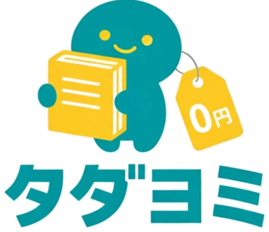
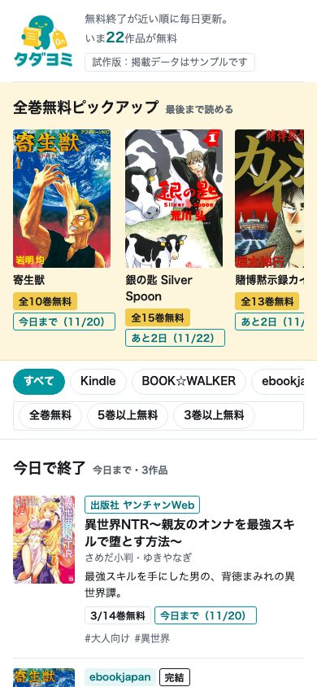
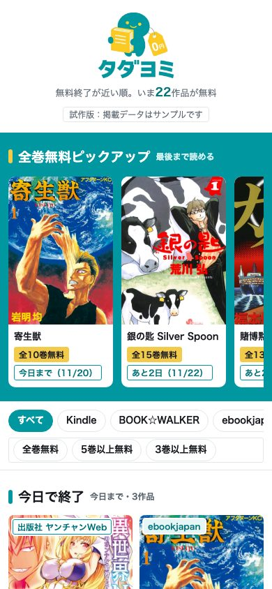
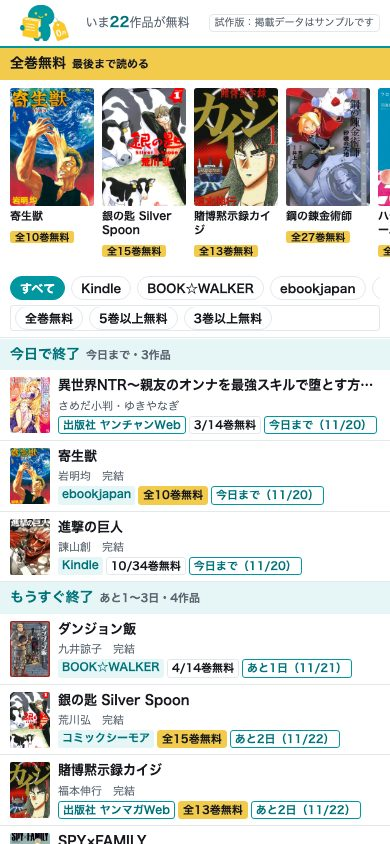
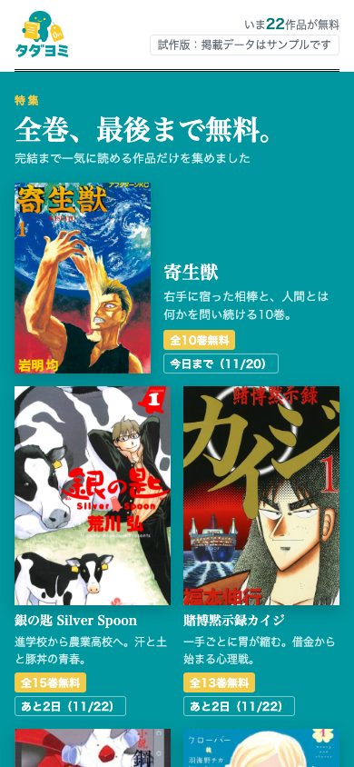
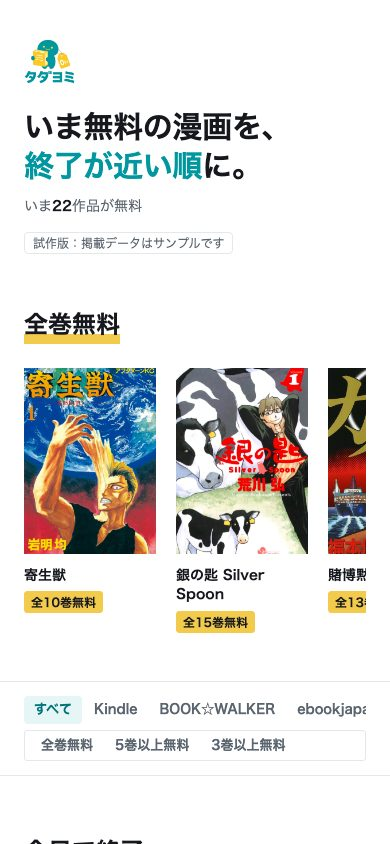

同じデータ・同じ絞り込みで、見た目だけ5通り。
試作版：掲載データはサンプルです
模倣元に忠実な縦リスト。表紙小・あらすじとタグまで見せる基準案
開く →
表紙を大きく2列グリッドで。ティールの帯に全巻無料を白カードで並べる
開く →
48pxの薄いヘッダーと1行タイトル。1画面に約10作品を詰める情報密度優先
開く →
「全巻、最後まで無料。」を明朝の特集見出しに。1作目を大きく扱う誌面風
開く →
余白を広く取り、見出しの文字を大きく。チップの枠を外し、情報は1行の文字で並べる
開く →